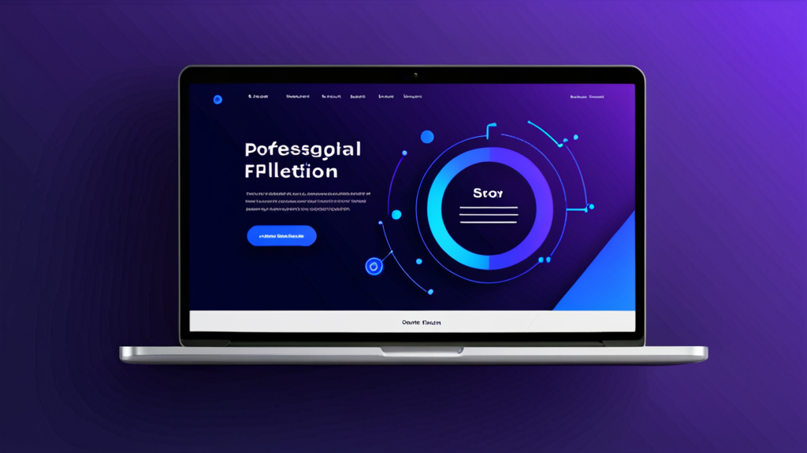

求人応募に最適なAIフォーム入力ツール：時間を節約しミスを減らす
土曜の午後、10件目のオンライン応募に職歴をコピペしているあの感覚、覚えていますか？指は痛み、前の会社の名前をまた間違えて入力する。すべての入力欄が、忍耐力を削る小さな税金のように感じられます。
あの繰り返しのデータ入力は単に面倒なだけではありません——チャンスを逃しているのです。調査によると、求職者の60%がフォーム入力に時間がかかりすぎて、途中で応募を断念しています。解決策は、より速くタイピングすることではありません。もっと賢く働くことです。
求人応募に最適なAIフォーム入力ツールが、何時間もの単純作業を数分に変える方法と、ツール選びのポイントをご紹介します。
従来の自動入力が求人応募で役立たない理由
ブラウザの自動入力は、住所やクレジットカードには便利です。しかし、求人応募は別物です。求められるのは：
- 複数の過去の職務（日付、責任、退職理由含む）
- 学歴（GPA、専攻、卒業年）
- 職種によって変わるスキル一覧
- 「なぜこの仕事に応募したのですか？」といった自由記述
標準の自動入力では対応できません。名前と電話番号を埋めた後、15もの空欄を前に呆然とすることになります。結局、Word文書からコピペする羽目に。
AIフォーム入力ツールは、これを別の方法で解決します。単に静的なテキストを保存するのではなく、文脈を理解するのです。
本当に使えるAIフォーム入力ツールの条件
すべてのフォーム入力ツールが同じではありません。役立つものと、1週間でアンインストールするものの違いはここにあります。
プロファイルベースの標準入力
基本機能はシンプルです：一度プロファイルを作成すれば、名前、メール、電話番号、住所、職歴が保存されます。求人応募ページにアクセスすると、拡張機能がそれらのフィールドを認識し、即座に入力。コピーもタイプミスも不要です。
これだけで応募1件あたり5〜10分節約できます。20件応募すれば、3時間以上の節約です。
自由記述へのAI回答
本当の魔法はテキストフィールドで発揮されます。優れたAIフォーム入力ツールは、汎用的なテキストをただ貼り付けるのではありません。質問を分析し、関連性の高い回答を生成します。
例えば：
- 質問： 「職場で衝突を解決した経験を教えてください。」
- AI回答： 保存された経験から情報を引き出し、STARメソッドを用いた短い段落に整形して挿入。
送信前に回答を編集することもできますが、面倒な作業はAIが行います。
プライバシーは思っている以上に重要
求人応募では、機密データを共有することになります：社会保障番号（身元調査用）、住所、職歴。これらが自分で管理できないクラウドサーバーに送信されるのは避けたいものです。
求人応募に最適なAIフォーム入力ツールは、すべての処理をローカルで行います。データはブラウザ内に留まり、アップロードもサードパーティサーバーへの送信もなく、データ漏洩のリスクもありません。
AIフォーム入力ツールを効果的に使う方法
これらのツールを最大限活用するには、少し準備が必要です。以下が効果的なワークフローです。
ステップ1：完全なプロファイルを作成する
急がないでください。20分かけて詳細なプロファイルを作成しましょう：
- 氏名、メール、電話番号、住所
- 2〜3の過去の職務（会社名、日付、各役割の箇条書き2〜3つ）
- 学歴（学校名、学位、卒業年）
- 10〜15の関連スキル一覧
- 短いプロフェッショナルサマリー（2〜3文）
詳細を追加すればするほど、AIの回答品質が向上します。
ステップ2：繰り返し質問にテンプレートを使う
多くの応募で似たような質問があります：「この役割に興味を持った理由は？」や「希望給与は？」など。プロファイルに3〜4のテンプレート回答を保存しておきましょう。AIがページ上で検出した会社名や職種に基づいて、わずかに調整します。
ステップ3：送信前に必ず確認する
AIは優れていますが、完璧ではありません。質問を誤解したり、少し違和感のある回答を生成する可能性があります。送信前にすべてのAI入力回答を読みましょう。応募1件あたり30秒で、恥ずかしいミスを防げます。
ステップ4：応募済みの企業を記録する
一部のフォーム入力ツールは、使用したサイトを記録します。これにより、同じ企業に重複応募するのを防げます。記録機能がない場合は、簡単なスプレッドシートで管理しましょう。
求人応募以外でも役立つ人々
求職者が主な対象ですが、同じツールは他の繰り返しフォーム作業にも有効です。
医療事務スタッフ
患者受付フォームは毎回同じ情報を求めます：名前、保険会社、病歴、現在の服薬状況。AIフォーム入力ツールで保存プロファイルから入力すれば、チェックイン時間が10分から2分に短縮されます。
保険金請求処理担当者
請求フォームは非常に反復的です。契約者名、証券番号、事故発生日、損害内容の説明。フォーム入力ツールでデータ入力ミスを減らし、処理を迅速化できます。
フリーランサー・コンサルタント
提案書や契約書には、名前、事業所住所、サービス内容、価格が必要です。クライアントごとに再入力する代わりに、AIに定型部分を任せ、カスタム部分に集中しましょう。
採用担当者
候補者を評価し評価フォームに入力する場合、自動入力拡張機能で役職、部署、面接日などの繰り返しフィールドを節約できます。
Chrome自動入力拡張機能を選ぶポイント
AIフォーム入力ツールを探す際は、以下の基準を考慮してください。
ローカル処理
データが端末から出て行かないこと。すべてをブラウザ内で処理する明記がある拡張機能を探しましょう。機密情報には不可欠です。
カスタマイズ可能なプロファイル
複数のプロファイルが必要です。求人応募用とフリーランス提案用など、簡単に切り替えられる拡張機能が理想的です。
フィールド検出精度
優れた拡張機能は、サイトが非標準のラベルを使用していてもフィールドを認識します。「FirstName」でも「fname」でも「given-name」でも、「名」として正しく入力されるべきです。
不要な権限を要求しない
一部のフォーム入力ツールは、すべてのブラウジングデータへのアクセスを要求します。これは危険信号です。良い拡張機能は、フォームフィールドと現在作業中のページのみにアクセスします。
よくある失敗例
優れたツールを使っていても、自ら台無しにすることがあります。以下の落とし穴を避けましょう。
AI回答への過度な依存
AIは「なぜこの仕事に応募したのか」という質問にまともな回答を書けますが、あなたの本物の熱意や企業に対する具体的な知識を捉えることはできません。AIを出発点として使い、その後パーソナライズしましょう。
プロファイルの更新忘れ
スキルは成長し、職歴は変わります。数ヶ月ごとにプロファイルを更新しないと、AIは時代遅れの回答を生成します。
フォーマットの無視
一部の応募ポータルは、貼り付けられたテキストのフォーマットを削除します。AI回答が箇条書きや太字を使用している場合、送信後に乱れて見える可能性があります。安全のため、プレーンテキストを使用しましょう。
簡単比較：AIフォーム入力ツール vs 手動入力
| タスク | 手動入力 | AIフォーム入力ツール |
|---|---|---|
| 基本情報（名前、メール） | 30秒 | 1秒 |
| 職歴（3職種） | 5〜7分 | 30秒 |
| 自由記述（3問） | 10〜15分 | 2分 |
| 確認と送信 | 2分 | 2分 |
| 応募1件あたりの合計 | 17〜24分 | 5分 |
応募1件あたり12〜19分の差はすぐに積み上がります。50件応募すれば、10〜16時間の節約です。
2025年にこれがより重要である理由
雇用市場は競争が激化しています。企業はAIを使って履歴書をスクリーニングし、キーワードに合わない候補者を自動で除外しています。より早く応募を提出できれば、より多くの職種にアプローチできます。
しかし、正確性のないスピードは無価値です。誤った日付を入力したり、フィールドを誤解釈するAIフォーム入力ツールは、あなたのチャンスを損なうでしょう。そのため、まずは重要度の低い応募でツールをテストするのが賢明です。
選択の決め手
何時間もかけてすべてのフォーム入力ツールを調査する必要はありません。プライバシー、正確性、セットアップの容易さの3点に焦点を当てましょう。これらの条件を満たす拡張機能なら、試す価値があります。
特に求職者の方には、求人応募に最適なAIフォーム入力ツールとは、標準フィールドと自由記述の両方を処理し、データをクラウドに送信しないものです。スピードとプライバシーの組み合わせは稀ですが、存在します。
しっかり構築されたソリューションの例として、Autofill AIをご覧ください。完全にブラウザ内で動作するAIを使用しており、データがサーバーに送信されることはありません。保存されたプロファイルから標準フィールドを入力し、ローカルAIまたはご自身のAPIキーを使用して自由記述の回答を生成できます。まさに、あなたの時間を奪う繰り返しのフォーム作業のために設計されています。
しかし、どのツールを選んでも原則は同じです：フォーム入力を必要な悪として扱うのをやめましょう。退屈な部分は自動化し、本当に重要なこと——面接に合格すること——にエネルギーを温存しましょう。